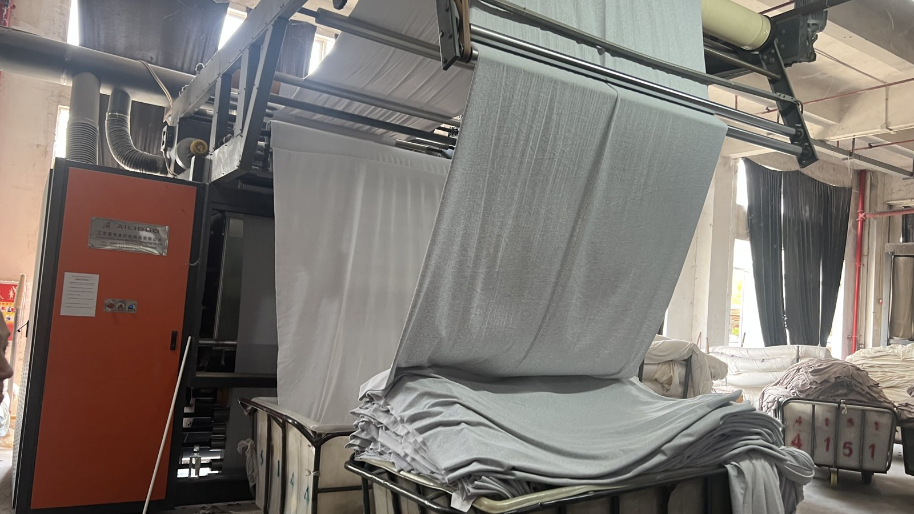

Taotao business-visit photo for textile-production context. It does not establish a particular fiber blend, supplier or order.
An importer has approved a hand-feel swatch for private-label garments. The supplier is ready to cut the order, and the draft U.S. care/fiber label names a cotton blend. The buyer still needs one answer: which bulk fabric lot will be cut, and does the evidence for that lot support the label?
Why this decision matters
For most U.S. textile and wool products, the FTC says labels must identify fiber content, country of origin and the responsible business. Its textile-labeling guide explains that fiber-content claims must be accurate; a tolerance is not permission to knowingly state an incorrect blend. The applicable label, care and origin requirements depend on the finished product. The importer should confirm its exact product and market obligations with a qualified compliance adviser.
A pretty swatch confirms only what was shown. It does not identify the rolls allocated to the order. A test report on an unrelated fabric does not solve that gap. The source photo in this article shows textile processing during a Taotao business visit; it proves no claim about a specific order, fiber composition or factory.
Taotao's swatch-to-roll-to-label sheet
| Evidence to request | Match it to | Decision question |
|---|---|---|
| Approved swatch or sealed pre-production sample with an internal reference | Purchase specification and color/finish approval | Is this the material actually approved? |
| Bulk roll IDs, lot number and supplier allocation record | Cutting plan and incoming-material log | Which rolls will enter this order? |
| Fiber-content report for a representative material sample, with method and sample identification | Proposed roll lot and claimed blend | Does the tested material relate to the proposed supply? |
| Final label artwork: generic fiber names and percentages, origin, responsible-business identity, plus care instructions where required | Product specification and the importer's compliance review | Do the labels describe the garment that will ship? |
| Change-control rule for substitute fabric or additional lots | Purchase order and sample approval | Who must approve a material change before cutting? |
How to verify the chain
Ask the supplier to place the approved swatch reference, proposed bulk lot IDs and label version on one sheet. Have the factory show the allocated rolls and reconcile the identifiers with its intake or cutting record. Review the report's sample description and test method; do not treat a document bearing a familiar lab logo as proof for every roll. If sampling or third-party testing is needed, agree the scope and who selects the sample before cutting. Finally, compare the label artwork with the material evidence and U.S. market requirements.
Red flags and limits
Pause if the supplier supplies only a generic composition statement, a report without a traceable sample, a label with percentages that differ from the approved specification, or a substitute material after sample sign-off. A lot number is a traceability aid, not independent proof of its composition. A factory visit can document the process and records observed, but it cannot replace testing or the importer's legal review.
Continue, pause or escalate
- Continue when the approved swatch, allocated lot IDs, representative evidence and final label version reconcile, with any remaining checks assigned before cutting.
- Pause when a lot or label version is missing, or the supplier cannot say which material will be used.
- Escalate a conflicting fiber result or uncertain U.S. labeling interpretation to an appropriately qualified laboratory or compliance specialist before authorizing production.
See Taotao's apparel sourcing range. One next step: send a redacted garment specification and proposed label for a document-gap review. Remove prices, personal contacts and confidential customer details first.